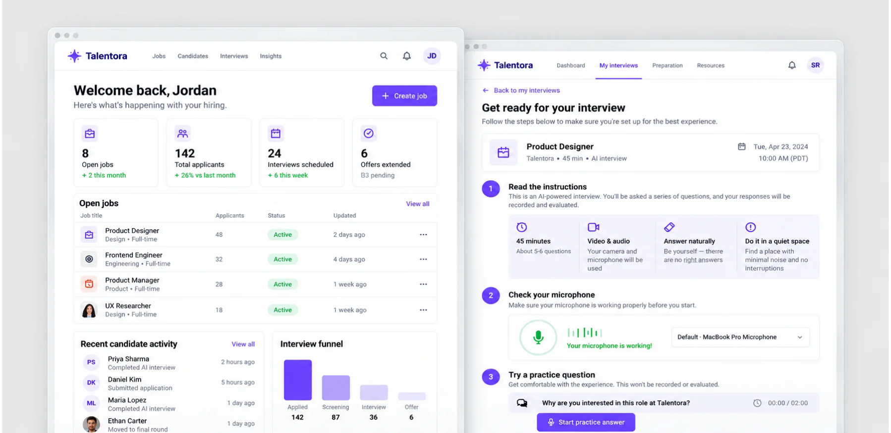
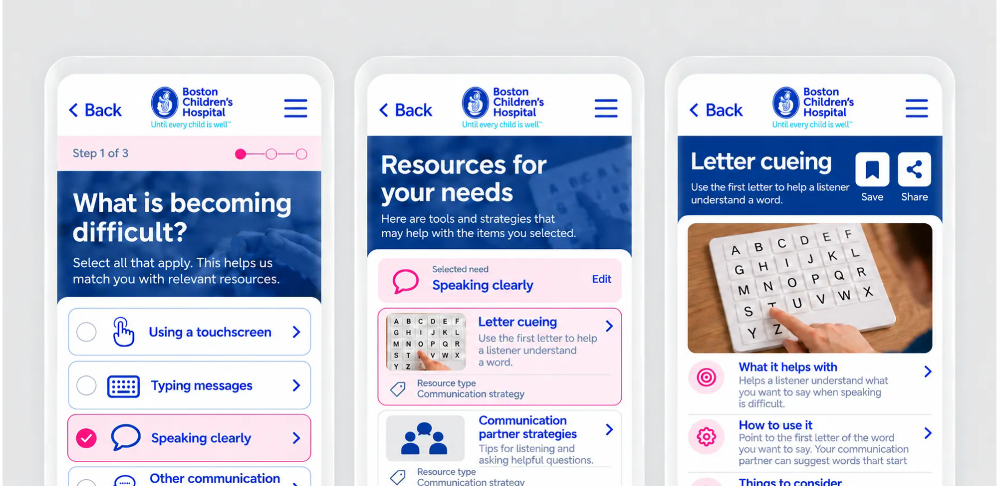

I’m Heather, a product designer who engineers clarity.
With a background in graphic design, I bring research, visual systems, and prototyping to complex workflows.


Talentora Interviewing
Modernizing a Hiring Pipeline with AI
Talentora explores conversational AI for early-stage hiring. I connected research, recruiter and candidate flows, interface design, and brand identity to help people navigate an unfamiliar interview experience.
Role
UX design and research
Scope
Product design, user flows, branding
Team
Six collaborators across design, technology, and business
A guided web app concept helping people with ALS and clinicians find practical resources for communication and care. My work explored how people might find, save, organize, and share useful information.
Role
UX/UI design, research, and prototyping
Scope
Information architecture, resource organization, accessibility